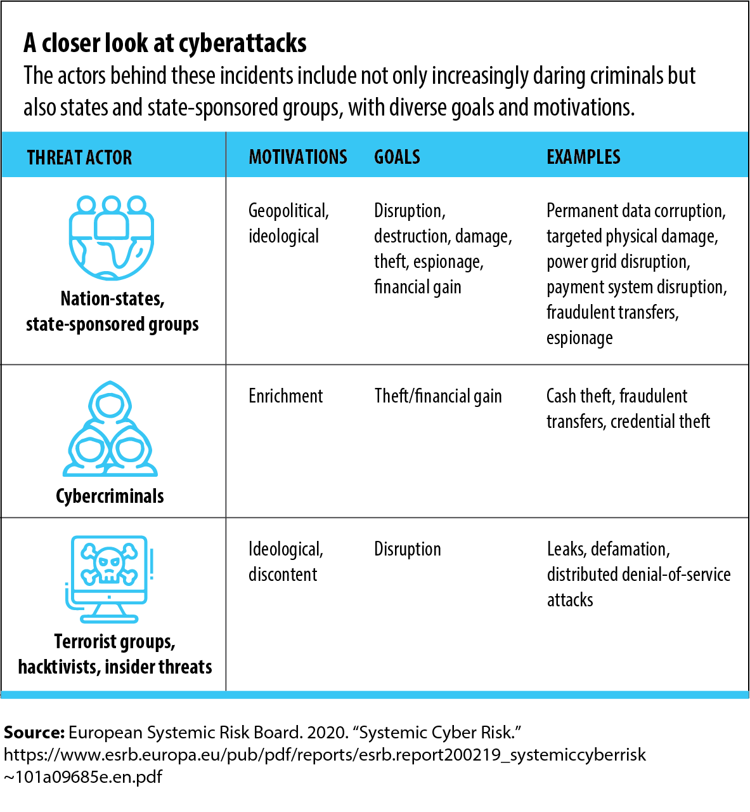

Cyber Security and Globalization
Unlike having a global economy, globalization has done more harm than good when it comes to cyber security. Since organizations and societies across the world have come, cyberattacks occur at a frequency rate of just every two seconds. The average cost of ransomware attacks is $4.54 million and may keep going up. This happens a lot because organizations don't take into account the third-party suppliers. After cyberattacks, business face a ton of damage to their servers networks, and personal devices.
In February 2016, hackers targeted a bank in Bangladesh and tried to steal $1 billion. They were stopped somewhat, but they stole $101 million, which is still a lot. Christine Lagarde, president of the European Central Bank, warned that a cyberattack could cause a financial crisis in the continent. The global financial system was actually undergoing digital transformation in Spring of 2021. Hackers were taking advantage of this and were posing a greater threat to the financial system.
Organizations have been using global partners a lot more because of globalization. They tend to share highly sensitive information with suppliers and can be fully unaware of it. Steps to keep organizations safe from cyberattacks include reviewing every supplier, identifying key suppliers through security risk assessments, making cybersecurity requirements a part of your third-party supplier contracts, ensuring suppliers comply with well-known cybersecurity frameworks, reviewing the supply chain's parters' connectivity with your systems, making sure data is encrypted, protecting data and third-parties' access to your platforms, verifying that third-party suppliers are safeguarding, requiring suppliers to provide their cybersecurity measures, documenting risk elements, and training employees on how to spot a cyberattack risk and show them how to make sure it doesn't harm them.
Click the image below to open it in a new tab.
